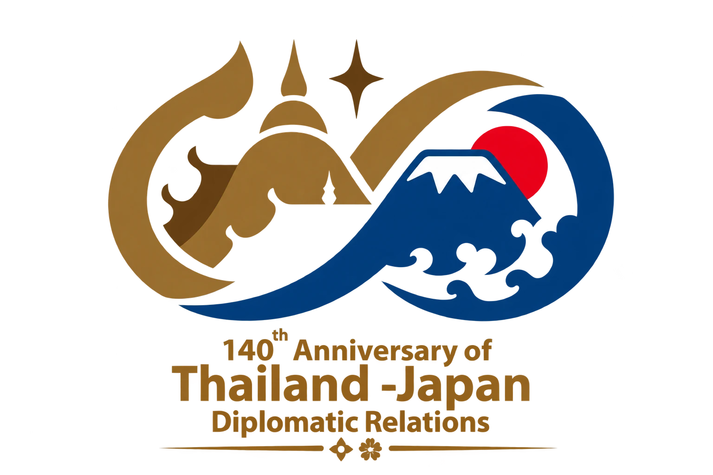
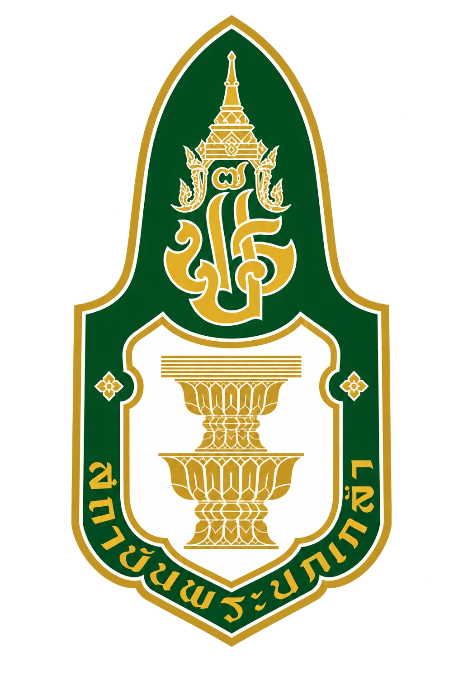
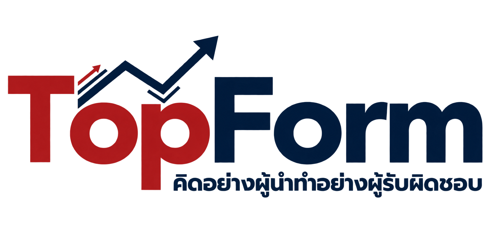
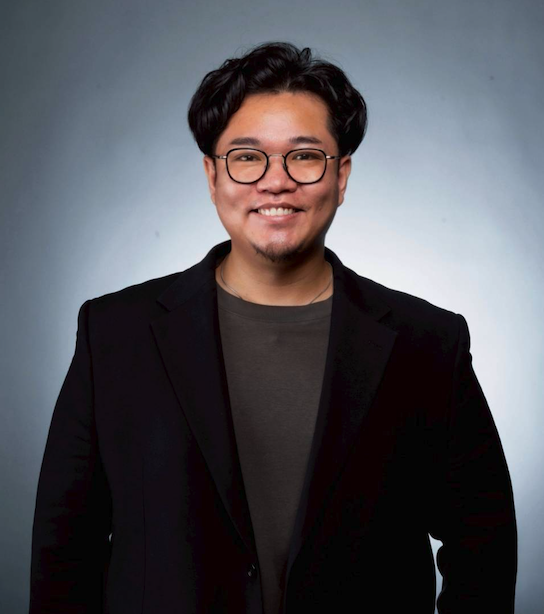

日タイ修好140周年（1887–2027）
140年、そしてその先へ日本とタイは、これから何を共につくるのか
140 Years and Beyond — What will we build together next?
Beyond 140 — 日タイの若手リーダー4グループが、
周年の先も協働し続けるためのプラットフォーム
周年の先も協働し続けるためのプラットフォーム


Beyond 140 は当日で終わるイベントではなく、日タイの若手リーダーが出会い、共に考え、
次へとつないでいくネットワークの出発点です。過去を記念する場から、未来を共創する場へ。

